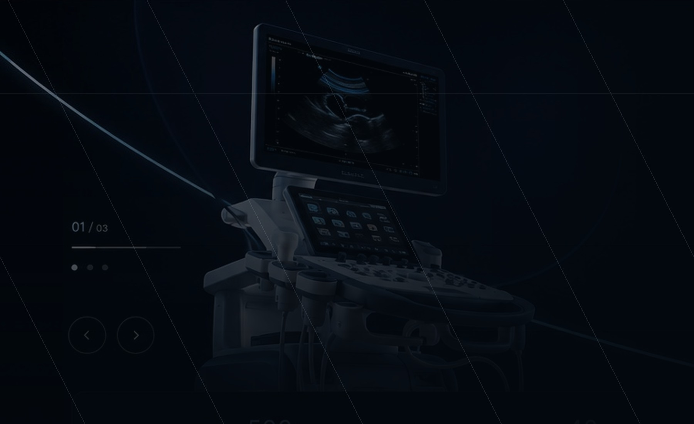

خیر. این ساختار برای معرفی حرفهای تجهیزات، خدمات و مسیر RFQ طراحی شده و تمرکز آن فروشگاهبودن نیست.
CONTACT & RFQ
تماس و درخواست استعلام
فرم مشخص برای ثبت محصول، خدمت یا پروژه موردنظر؛ آماده توسعه برای اتصال به ایمیل، CRM یا API.
اطلاعات بیشتر در بریف اولیه، کیفیت پاسخ و تطبیق را بهتر میکند.

FAQ
پرسشهای رایج
پاسخهای کوتاه درباره ماهیت سایت و مسیر همکاری.
چون هر خدمت دامنه، خروجی و روایت خاص خودش را دارد و این تفکیک باعث حرفهایتر شدن تجربه برند میشود.
بله. ساختار داده و فرمها طوری چیده شده که در مراحل بعدی به پنل یا CRM متصل شوند.
از طریق فرم استعلام یا تماس مستقیم میتوان نیاز را ثبت کرد تا مسیر پیشنهاد متناسب تنظیم شود.